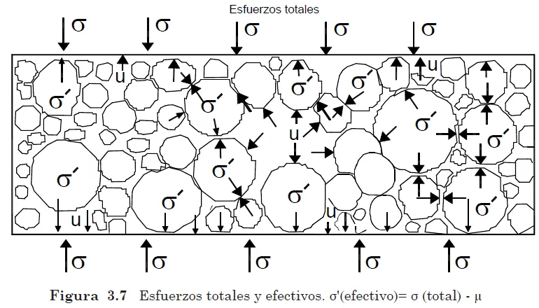
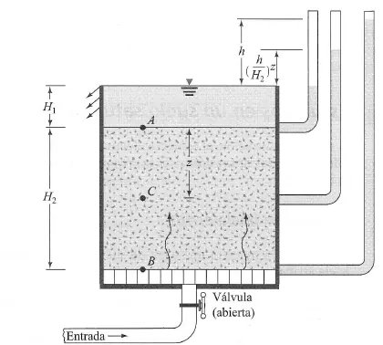

Esfuerzos efectivos#
Importante
Objetivos de aprendizaje
Enunciar y deducir el principio de esfuerzo efectivo de Terzaghi.
Calcular los perfiles de esfuerzo total, presión de poros y esfuerzo efectivo en un terreno estratificado.
Evaluar el efecto del flujo vertical sobre los esfuerzos efectivos y calcular el gradiente crítico.
Reconocer el papel de los esfuerzos efectivos en la resistencia y la deformación de los suelos.
Resistencia y deformación de los materiales#
La resistencia es la capacidad de un material para soportar una carga sin fallar. En los suelos interesa principalmente la resistencia al corte, porque los suelos fallan por deslizamiento entre partículas. La relación entre esfuerzo y deformación de un suelo puede ser elástica, elastoplástica o elastoplástica con ablandamiento, en la que la resistencia alcanza un pico y luego desciende a un valor residual. Las arcillas sobreconsolidadas y las arenas densas muestran este ablandamiento, mientras que las rocas suelen tener un comportamiento frágil.
Para simplificar el análisis, muchas soluciones clásicas suponen que el suelo es un medio continuo, homogéneo, isotrópico y linealmente elástico. Es una idealización útil para calcular esfuerzos bajo cargas de trabajo (capítulo Distribución de esfuerzos verticales), pero no describe el comportamiento cerca de la falla. Tanto la resistencia como la deformación de un suelo dependen de los esfuerzos que soporta su esqueleto de partículas, no del esfuerzo total. Ese es el contenido del principio de esfuerzo efectivo.
El principio de esfuerzo efectivo#
Terzaghi (1936) formuló el principio que es la base de la mecánica de suelos moderna. En sus palabras, todos los efectos medibles de un cambio de esfuerzo, como la compresión, la distorsión y el cambio de resistencia al corte, se deben exclusivamente a cambios en los esfuerzos efectivos. Por lo tanto, cualquier investigación sobre la estabilidad de un suelo saturado requiere conocer tanto el esfuerzo total como la presión de poros.
Deducción#
Considérese una columna de suelo saturado de área \(A\), con un plano horizontal a una profundidad \(z\) bajo el nivel freático, que coincide con la superficie. El peso total de la columna es la suma del peso de las partículas, \(W_s\), y del peso del agua, \(W_w=\gamma_wV_w\). Las partículas sumergidas reciben el empuje de Arquímedes, \(U=\gamma_wV_s\), de modo que su peso efectivo es \(W'_s=W_s-U\). Sustituyendo:
Al dividir por el área se obtienen tres términos con significado físico. \(W/A\) es el esfuerzo total \(\sigma\), debido al peso de todo lo que hay sobre el plano. \(W'_s/A\) es el esfuerzo efectivo \(\sigma'\), transmitido por los contactos entre partículas. \(\gamma_wz\) es la presión de poros \(u\), que actúa en el agua con igual intensidad en todas las direcciones. Así:


Figura 32 Esfuerzo total, presión de poros y esfuerzo efectivo.#
El esfuerzo efectivo no es una fuerza que se pueda medir directamente en un contacto: es una diferencia de esfuerzos. Su utilidad radica en que controla el comportamiento del suelo. Un cambio de la presión de poros a esfuerzo total constante produce cambios de volumen y de resistencia, mientras que un aumento igual de \(\sigma\) y de \(u\) no produce efecto alguno. Por eso un suelo en el fondo de un lago profundo no se consolida por el peso del agua que tiene encima.
Implicaciones geológicas
El principio explica fenómenos que el geólogo observa en campo. La subsidencia de ciudades por bombeo de acuíferos se debe al aumento del esfuerzo efectivo al bajar el nivel piezométrico. Los deslizamientos detonados por lluvia ocurren porque el aumento de la presión de poros reduce el esfuerzo efectivo normal sobre la superficie de falla. Y la resistencia de un sedimento que no se compactó, por estar sometido a sobrepresiones durante su depósito rápido, es anormalmente baja.
Perfiles de esfuerzos en un terreno estratificado#
En condiciones hidrostáticas el esfuerzo total vertical a una profundidad \(z\) es la suma de los pesos de los estratos suprayacentes, la presión de poros es \(u=\gamma_wz_w\), donde \(z_w\) es la profundidad bajo el nivel freático, y el esfuerzo efectivo resulta de la diferencia. Sobre el nivel freático se usa el peso unitario húmedo y, si se ignora la succión, \(u=0\); bajo el nivel freático se usa el peso unitario saturado.
Ejemplo resuelto: perfil de esfuerzos y efecto del descenso del nivel freático
Un perfil se compone de 5 m de arena sobre 4 m de grava que descansa sobre roca. El nivel freático está a 2 m de profundidad. El peso unitario de la arena es 17 kN/m³ sobre el nivel freático y 20,5 kN/m³ por debajo; el de la grava saturada es 21,5 kN/m³. Use \(\gamma_w=10\) kN/m³. Calcule \(\sigma\), \(u\) y \(\sigma'\) hasta la roca, y analice qué ocurre si el nivel freático desciende hasta el contacto arena-grava.
\(z\) (m) |
\(\sigma\) (kPa) |
\(u\) (kPa) |
\(\sigma'\) (kPa) |
\(\sigma'\) con NF a 5 m (kPa) |
|---|---|---|---|---|
0 |
0 |
0 |
0 |
0 |
2 |
\(2\times17=34\) |
0 |
34 |
34 |
5 |
\(34+3\times20{,}5=95{,}5\) |
30 |
65,5 |
\(5\times17=85\) |
9 |
\(95{,}5+4\times21{,}5=181{,}5\) |
70 |
111,5 |
\(85+86-40=131\) |
Con el descenso del nivel freático, la arena entre 2 y 5 m pasa a estar húmeda (17 kN/m³) en lugar de saturada, y la presión de poros en la base disminuye de 70 a 40 kPa. El esfuerzo efectivo en la base aumenta de 111,5 a 131 kPa, un incremento de 17 %. Si bajo la grava hubiera una arcilla compresible, este aumento produciría asentamientos por consolidación.
Flujo vertical y esfuerzos efectivos#
Cuando el agua fluye verticalmente a través del suelo, la presión de poros deja de ser hidrostática y el esfuerzo efectivo cambia. Con flujo descendente la fuerza de filtración actúa en el mismo sentido que el peso y el esfuerzo efectivo aumenta. Con flujo ascendente ocurre lo contrario. A una profundidad \(z\) dentro de un suelo con flujo ascendente y gradiente \(i\):
El esfuerzo efectivo se anula cuando el gradiente alcanza el valor crítico:
En ese momento la arena pierde toda su resistencia y se comporta como un líquido denso. Es la condición de ebullición o arena movediza, que se produce aguas abajo de presas, en el fondo de excavaciones bajo el nivel freático y en surgencias naturales. Los suelos finos no llegan a este estado tan fácilmente porque la cohesión los mantiene unidos.


Figura 33 Flujo ascendente a través de una muestra de suelo.#
Ejemplo resuelto: gradiente crítico
Una arena tiene \(G_s=2{,}65\) y \(e=0{,}60\). Calcule el gradiente crítico y el factor de seguridad contra la ebullición si en el fondo de una excavación el gradiente de salida es 0,45.
\(i_{cr}=(2{,}65-1)/(1+0{,}60)=1{,}03\). El factor de seguridad es \(FS=i_{cr}/i=1{,}03/0{,}45=2{,}3\). Se suele exigir un valor mínimo entre 3 y 4 porque el gradiente se concentra en los bordes de la excavación y porque la erosión interna puede comenzar con gradientes menores que el crítico.
Suelos parcialmente saturados#
En la zona no saturada el agua y el aire comparten los poros y el principio de Terzaghi no se aplica directamente. Bishop (1959) propuso una extensión:
donde \((u_a-u_w)\) es la succión matricial y \(\chi\) un parámetro que varía entre 0 (suelo seco) y 1 (suelo saturado). La succión aumenta el esfuerzo efectivo y con él la resistencia. Cuando la lluvia satura el suelo, la succión desaparece y la resistencia disminuye, aunque no se forme un nivel freático. Este mecanismo, estudiado por Fredlund and Rahardjo [1993] y Lu and Likos [2004], es esencial para entender la estabilidad de las laderas en suelos residuales tropicales.
Lecturas recomendadas#
Ejercicios#
Calcule los esfuerzos total y efectivo y la presión de poros a 15 m bajo el fondo de un lago de 6 m de profundidad, en una arcilla con \(w=40\,\%\) y \(G_s=2{,}65\).
Repita el ejemplo del perfil arena-grava suponiendo que un acuífero confinado en la grava tiene una carga piezométrica 3 m sobre la superficie del terreno.
Explique por qué una excavación en arena bajo el nivel freático puede fallar por el fondo aunque sus taludes sean estables.